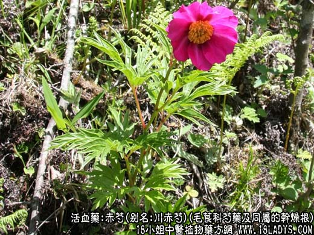
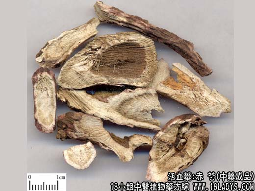
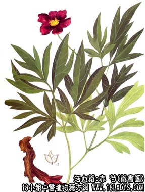

本品为常用中药。始载《神农本草经》，列为中品。商品有赤芍（多伦赤芍）、铁杆赤芍、川赤芍三种。
来源：为毛茛科多年生草本植物芍药及同属草芍药、川赤芍、毛叶芍药、毛叶草芍药、美丽芍药等的干燥根。均为野生。
产地：赤芍生产于内蒙古锡盟地区的多伦。此外，河北省龙关、辽宁、黑龙江等部分地区亦产。
铁杆芍药：主产于华北、东北以及西北等地。
川芍药：主产于四川省阿坝、甘孜、凉山等自治州以及云南、贵州等地。
性状鉴别：赤芍：呈圆柱形，稍弯曲，长10～40余厘米，直径0.6～2厘米。表皮暗棕色，粗糙，多数纵顺皱纹及微凸起的横向皮孔，皮松薄易剥落，俗称“糟皮”。质较轻松，易折断，断面略显粉性，粉白色至淡棕色，俗称“粉碴”，具射线纹理（菊花心）及裂隙。气微香，味微苦涩，略酸。以支条粗长，质较轻松，糟皮粉碴者为佳。
铁杆芍药：形色气味与赤芍类似，唯支条较细，皮紧结不易剥落，内碴粉白色或黄白色，肉坚实，无裂隙，质较坚重。以支条均匀，内碴粉白者为佳。
川赤芍：呈圆柱形或长圆锥形，长10～25厘米，直径1～4厘米。表皮棕色或棕褐色，有纵顺皱纹及横向皮孔。质坚实，断面显粉性、黄白色或带紫色，显射线纹理。气香。味苦甜。以支条粗壮，内碴黄白色者为佳。
主要成分：含苯甲酸、鞣质、芍药甙等。
功效与作用：1、镇静、镇痛。尤其对缓解肠痉挛引起的腹痛，有明显作用。实验证明，芍药浸出液通过刺激副交感神经，对焦爱徒离体肠管显抑制作用。又有人认为对中枢神经系统起镇静作用（药学杂志，89：879，1969）。临床经验表明，赤芍的镇痛作用不比当归差。
2、抗菌，抗菌谱与丹皮类似。体外试验对痢疾杆菌、伤寒杆菌、金黄色葡萄球菌、溶血性链球菌有较强抑菌作用。有效成分为苯甲酸。
3、抗病毒。对流感病毒有一定抑制作用。
4、扩张心冠脉。赤芍水浸液有一定的扩张心冠状动脉作用。
炮制：切片，生用。
性味：酸、苦、微寒。
归经：入肝经。
功能：清泄肝火，散瘀活血，止痛。
主治：月经不调，瘀滞腹痛，经闭徵瘕，痈肿疮毒，关节肿痛，胸胁疼痛。
临床应用：凡因瘀血而引起的疼痛或烦热，都可用芍药。
1、用于治疗因血热瘀滞而致的小腹或腰背疼痛、坠痛。如妇女的闭经、腹痛，配桃仁、红花、归尾；男性的慢性前列腺炎（属实证者），配蒲公英、败酱草等，如前列腺汤。
3、用于治疗脑震荡后遗症之瘀血头痛，配川芎、白芷、当归、羌活等。
4、用于治疗冠心病心绞痛，配川芎、红花、降香等，方如冠心二号方。
用量：6～15g。
附：赤芍长于活血散瘀，白芍偏于镇静止痛，兼有补性，故补血养阴，宜用白芍。凉血逐瘀宜用芍药。妇女肝郁气痛、烦躁、或跌打肿痛，可肿痛，可芍药、白芍同用。一般发热头痛药辅助清热和活血药时，可任选赤芍或白芍。
处方举例：前列腺汤：赤芍15g，蒲公英30g，败酱草15g，桃仁6g，王不留行6g，丹参6g，泽兰6g，乳香6g，川楝子6g，水煎服。
注：赤芍与白芍原植物均为毛茛科属植物的干燥根。古代赤白不分，近代已分为两种，但划分的说法不一，简录于下：1、古代认为开红花者为赤芍，开白花者为白芍。2、近代有人认为栽培品为白芍，野生品为赤芍。3、有人不论栽培或野生，只要经过去皮煮熟晒干的即为白芍，不去皮直接晒干的即为赤芍。4、有人为两者同种，因生长环境的条件不同，形色有所变异。5、有人认为两者虽然同科同属但不同种，不能混为一谈。以上五种说话，都有一定客观论据。芍药的花朵有单、有双、有红、有白，如湖南地区栽培的芍药，就有白花白根、红花红根等不同品种，说明花色不同，根皮也有白赤等不同。栽培绝大部分作白芍用，但也有少数以栽培品作赤芍，如过去北京市效生产的铁杆赤芍。野生品绝大部分作赤芍，但也有的作白芍，如陕西宝鸡生产的西白芍。关于因生长环境的变化而产生的变异现象，以及按植物分类进行划分，都是可以理解的，但就实际商品，习惯上认为正品是多伦赤芍，其原植物一说为芍药见《中药志》，但也有的认为是草芍药见《中药材品种论述》，尚待统一；就其糟皮粉碴的特点来说，是不能加工成白芍的，如经栽培，是否能加工白芍，也尚待试验证明。